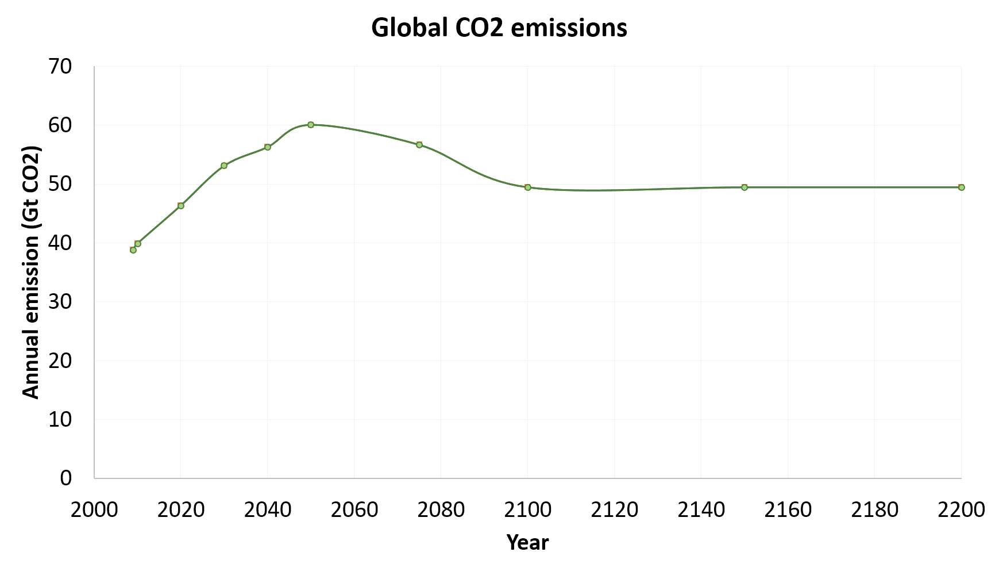
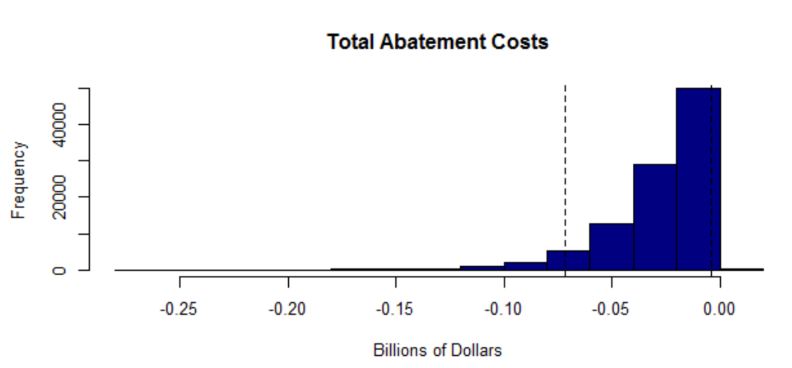
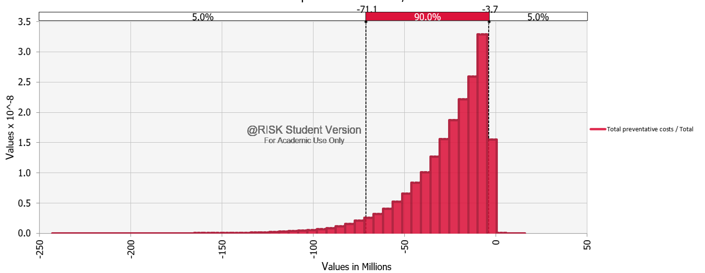
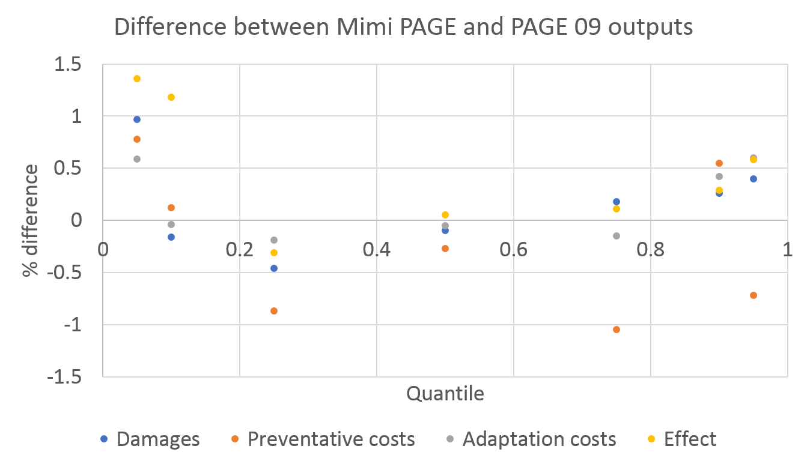

Validation
This guide briefly explains how Mimi PAGE results were validated against PAGE 2009 outputs.
Validations were performed for both the deterministic and probabilistic versions of the model. For the deterministic version of the model, both individual components and final outputs were validated. For the probabilistic version of the model, final outputs were validated.
Folder Structure
Relevant tests and data are saved in the 'test' folder. The folders are organized as follows.
test
Contains seperate unit tests for the deterministic version of each of the individual model components.
/validationdata
We obtained PAGE 2009 values from the Excel version of PAGE 2009, provided by Chris Hope (personal communication).
Running the Excel version of PAGE 2009 requires downloading the @RISK 7.5 Industial software (available at http://go.palisade.com/RISKDownload.html), which facilitates probabilistic modeling in Excel. Free 15-day trials of the software are avaiable.
In order to perform tests of individual components, known values were extracted from PAGE 09 or the PAGE written documentation. Where they were obtained from PAGE 2009, values were exported with full precision using a custom function. (Key values are saved in the 'validationdata' folder within the 'test' folder.) Truncating precision can lead to compounding errors which will cause Mimi PAGE results to diverge from PAGE 2009.
Deterministic validations
For each individual Mimi PAGE component, we tested the component with known input data and compared output with values from PAGE 2009. Nearly all values matched within 1%.
As an example of how a test file works, consider test_CO2emissions, which serves as a test for the CO2emissions.jl file (within ../src)
First, we initialize the model and reference the relevant files (load_paramaters.jl and, notably, CO2emissions.jl). Then we add the CO2emissions component to our model m.
using Mimi
using Base.Test
include("../src/load_parameters.jl")
include("../src/CO2emissions.jl")
m = Model()
setindex(m, :time, [2009, 2010, 2020, 2030, 2040, 2050, 2075, 2100, 2150, 2200])
setindex(m, :region, ["EU", "USA", "OECD","USSR","China","SEAsia","Africa","LatAmerica"])
addcomponent(m, co2emissions)Then we set the parameters (baseline emissions and CO2 emissions growth) using exogenous values from PAGE 2009, which are saved in the data folder.
setparameter(m, :co2emissions, :e0_baselineCO2emissions, readpagedata(m,"data/e0_baselineCO2emissions.csv"))
setparameter(m, :co2emissions, :er_CO2emissionsgrowth, readpagedata(m, "data/er_CO2emissionsgrowth.csv"))Then we run our model, save the output to "emissions." We then load exogenous PAGE 2009 data on emisions and save this to emissions_compare. We test to see if the output from our model matches that from PAGE within 1e-3 precision (it does).
##running Model
run(m)
emissions= m[:co2emissions, :e_regionalCO2emissions]
# Recorded data
emissions_compare=readpagedata(m, "test/validationdata/e_regionalCO2emissions.csv")
@test_approx_eq_eps emissions emissions_compare 1e-3
The graph below shows the output from both PAGE 2009 and PAGE MIMI.

Probabilistic validation
For the probabilistic version of the model, we graphed and compared distributions of total damages, total preventative costs, total adaptation costs, and total effects.
The scripts for the PAGE MIMI tests can be found ______.
The graphs below show total abatement costs, as one example.
Total abatement costs, based on PAGE 09 
Total abatement costs, based on PAGE Mimi 
Distributions matched closely (<1.5% difference) for all outputs, based on ____(10,000?) runs. 
(Positive values indicate higher results from PAGE MIMI compared to PAGE09)